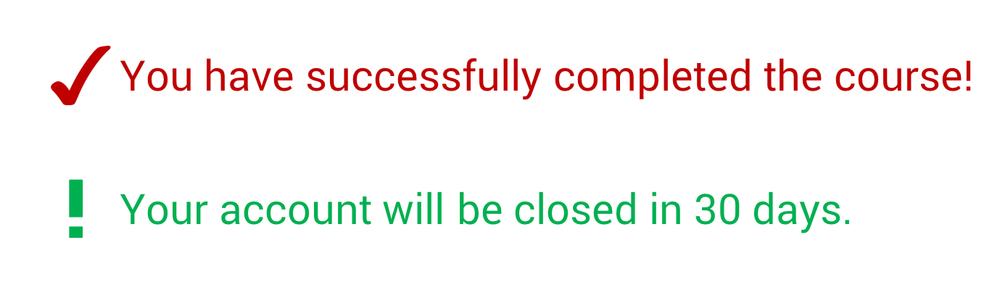
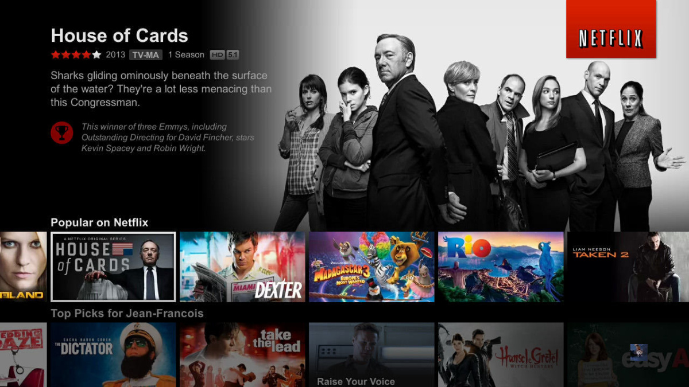
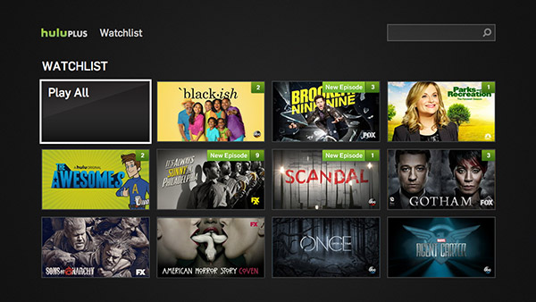
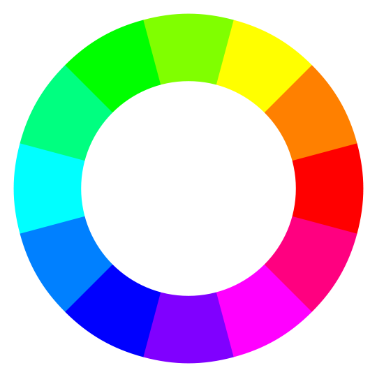

Using Color In Design
Think about your drive to work this morning. More than likely, you probably encountered a stoplight:
How did you know what the light was saying?
Was it based on the position of the light? Or, was it based on the color? Was it both. If we switched the order of colors, would you still understand it? Or would you be confused?
Odds are it might be confusing for a few seconds, but that most people would adapt pretty quickly — due to the power of color.
Common Color Associations
As humans, we associate colors with different meanings. For instance, we intuitively know that red signifies 'danger' or 'stop'.
We also know that green signifies health, nature, and a sense of ease.
The human brain takes shortcuts and if a person is not paying attention to the actual content, they can make assumptions about whether something is important or not.
As a designer, you want to be respectful of these common associations. For example, you don't want to have a warning or error message show up in green. Nor do you want a simple notification showing up in red.

The key is to be aware of these common conventions - and respect them. Color can communicate things in an instant. Let's look at just a handful of examples.
Consider entertainment sites. Nearly all of them use some kind of dark background - which makes sense since so many people associate a dark room with movies.
 
Or consider financial apps. Look at how many use green as a color.

There are plenty of resources on the web that try to explain common emotional associations with color. Here are some commonly accepted associations:
- Blue indicates trust
- Red stimulates emotions and hunger
- White denotes purity.
These can be a good starting point when considering which colors to use, but never forgo placing yourself in your audience's shoes.
Note
Shade, hues, and degree of lightness or darkness can communicate more. Even if you've gone to great lengths to choose an appropriate color scheme, there's still the shade, hue and degree of lightness or darkness of the color that can change its perception
For example, orange may be perceived as a color of warmth, friendliness and confidence, but once lightened into more of a peach tone, can give off a feminine, comforting style. Darkening a color can make it seem more foreboding or unapproachable.
Technical Aspects of Color
Now I want to talk about the technical aspects of color - which are just as important as the human aspects.
Colors can be described to computers in a number of ways. Today, I will cover two of the most important color models: HEX and RGB.
They are both really similar in that they mix different levels of Red, Green, and Blue to create a color.
The RGB model lets you input three values for each of the colors. The value can range from 0 to 255. 0 means none of the specific color is present. 255 means all of the color is present.
If you set all of the values to 0, you get black. If you set all of the values to the highest value of 255, you get white. The mighty color wheel can help you understand how different colors are made:

For example, based on the color wheel you can deduce that if you want to get yellow, you would do equal combinations of red and green, while eliminating blue completely.
The HEX color model works the same way, but the values are expressed differently. A hex color code is made up of 6 values. The first two values describe the levels of red. The second two describe green. And the last two describe blue. Values range from 00 to ff - with 0 meaning none of the color is included and f meaning all of the color is included. HEX is commonly used in web development, which is why it is crucial to be familiar with. Maintaining consistency with any online assets in important.
Either of these color models allow you to create any color you want using a mixture of the primary colors. There are color picking tools you can use, but knowing exactly how the system works can let you make subtle tweaks. For example, you might say, I like this color but it needs just a tad bit more red.
Pairing Colors
When it comes to pairing colors, using the color wheel is key. Colors opposite of each other pair well, as do colors split three ways.
There are also plenty of color scheme generators. It's important to understand the basics, but it's also important when to know to outsource the work for you.
As a rule of thumb, you generally want to choose 2-3 colors and tints. Make sure they contrast with each other and match the emotions you are trying to invoke/communicate. They can be vivid and solid for a lively modern brand, or muted for something more traditional. Many brands use one dominant color.
You can also extract colors from images. This is particulary helpful if you are trying to replicate the feel of something. Here is an example.

Common Novice Mistake
Using Pure Hues of colors
Randomly choosing the basic colors that you learned in primary school (prism, rainbow) should be avoided. Pure hues look amateur because they are so bright and bring attention to themselves. Think about the window controls on a Mac. The colors are duller and less saturated. They still contrast, but at a lower level.
A Word On Color Varations
The human eye is sensitive to color and can perceive millions of different colors. We can detect subtle color changes. You don't need to have radically different colors. You can use slightly different shades and tints. Or put simply, lighter or darker variations of a starter color.
Color contrast is also important — you don't want to be too subtle. The background and foreground should have a minimum contrast ratio. Screen brightness, poorly calibirated monitors, and visual impairments can all make very subtle color variations difficult to see. While subtlety is important, your main content should be unsubtle. Things that should be read should have a strong contrast ratio compared to the background. Decoration items can be more subtle.
A few weeks ago I was working on a website with a friend. My friend was creating a potato delivery service and wanted me to work on the design. I created the design on my MacBook Pro and was pretty proud of what I did. I said to myself ‘dang, this is really good.’ Well, a few days later, I looked at the design on my parent's computer. I couldn't read anything. I had rushed through a design and hadn't considered color contrast levels. Sure, subtle designs will look good on a good screen. But not everyone has nice screens. Not everyone has monitors with the same brightness and contrast settings. That's why color contrast is so important - especially for digital mediums.


Common Novice Mistake
Using Pure Black/Grays/Whites. Don't do that. Subtlety is key.
Color For The Blind
Color is not a principle, but rather an element. It can help you establish consistency. It can help bring contrast. But color should not be relied upon by itself.
Good designers are empathetic to their audience. They realize that not everybody can see color.
Think back to the stoplight example we highlighted earlier. The simple, yet mighty, stoplight is an example of a design that uses multiple principles of design to ensure all people can understand and interact with it. Some people do rely on the positioning rather than color.
There are a number of color blindess simulation tools you can use to ensure decent levels of contrast.
Summary
There are two main things I want you to take away. Firsrt, I want you to think about the psychology and context of color - what are common conventions and associations people have, and how can you leverage them.
And finally, I want you to think about the technical aspects of color, and the importance of subtlety, shades, and pairings.